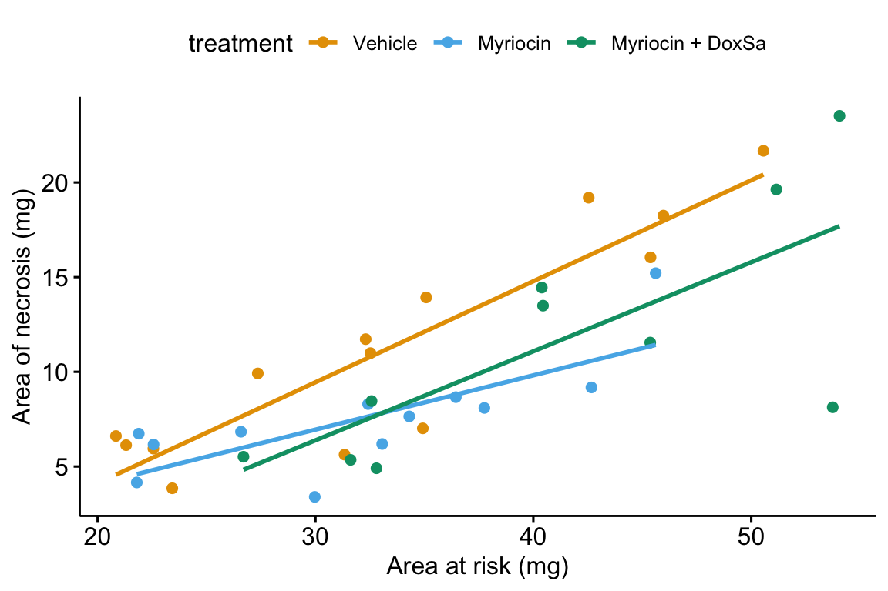
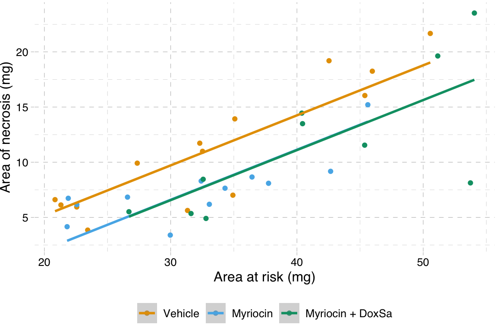

14.5 Working in R
14.5.1 Importing the heart necrosis data
data_folder <- "data"
data_from <- "1-Deoxydihydroceramide causes anoxic death by impairing chaperonin-mediated protein folding"
file_name <- "42255_2019_123_MOESM7_ESM.xlsx"
file_path <- here(data_folder, data_from, file_name)
sheet_i <- "Figure 4h"
fig4h_1 <- read_excel(file_path,
sheet = sheet_i,
range = "A5:B19",
col_names = TRUE) %>%
clean_names() %>%
data.table()
fig4h_2 <- read_excel(file_path,
sheet = sheet_i,
range = "D5:E17",
col_names = TRUE) %>%
clean_names() %>%
data.table()
fig4h_3 <- read_excel(file_path,
sheet = sheet_i,
range = "G5:H15",
col_names = TRUE) %>%
clean_names() %>%
data.table()
fig4h <- rbind(data.table(treatment = "Vehicle", fig4h_1),
data.table(treatment = "Myriocin", fig4h_2),
data.table(treatment = "Myriocin + DoxSa", fig4h_3))
treatment_levels <- c("Vehicle", "Myriocin", "Myriocin + DoxSa")
fig4h[, treatment := factor(treatment, levels = treatment_levels)]14.5.2 Fitting the model
For an additive model, add the covariate to the model formula using the + operator. The order of the variables doesn’t matter (the right-hand-side of the model formula could be treatment + area_at_risk).
For an nonadditive model with interactions, add the covariate to the model formula using the * operator. ~ area_at_risk * treatment is a shortcut to the full model formula, which is 1 + area_at_risk + treatment + area_at_risk * treatment. R expands the short formula to the full formula automatically. Again, the order of the variables doesn’t matter (the right-hand-side of the model formula could be treatment * area_at_risk).
14.5.3 Using the emmeans function
## treatment emmean SE df lower.CL upper.CL
## Vehicle 11.98 0.839 32 10.3 13.7
## Myriocin 8.87 0.916 32 7.0 10.7
## Myriocin + DoxSa 8.83 1.045 32 6.7 11.0
##
## Confidence level used: 0.95## area_at_risk treatment emmean SE df lower.CL upper.CL
## 35 Vehicle 11.98 0.839 32 10.3 13.7
## 35 Myriocin 8.87 0.916 32 7.0 10.7
## 35 Myriocin + DoxSa 8.83 1.045 32 6.7 11.0
##
## Confidence level used: 0.95# recenter emms at the mean of the vehicle group
vehicle_mean_x <- mean(fig4h[treatment == "Vehicle",
area_at_risk])
m1_emm_2 <- emmeans(m1,
specs = c("area_at_risk","treatment"),
at = list(area_at_risk = vehicle_mean_x))
m1_emm_2## area_at_risk treatment emmean SE df lower.CL upper.CL
## 33.3 Vehicle 11.21 0.833 32 9.51 12.90
## 33.3 Myriocin 8.09 0.903 32 6.25 9.93
## 33.3 Myriocin + DoxSa 8.06 1.082 32 5.85 10.26
##
## Confidence level used: 0.95## treatment mean
## 1: Vehicle 11.206580
## 2: Myriocin 7.546081
## 3: Myriocin + DoxSa 11.49931914.5.4 ANCOVA tables
If you are going to report statistics from an ANCOVA table, be sure that what you report is what you think you are reporting – it is very easy to get this wrong in R. One way to easily get a table using Type II or III sums of squares is to set the contrast option of the factor variable to contr.sum (this tells R to use deviation coding to form the model matrix for the linear model) and then use the function Anova from the car package (not base R anova).
- It is safest to set this with the
lmfunction itself. - The coefficients of the linear model will have a different interpretation than that given above. Either understand the new interpretation (not given here) or fit two models, one without the reset contrasts and one with the reset contrasts.
- The estimated marginal mean table and the contrast table are the same, regardless of how contrasts are set in the linear model.
- Many websites show code that changes the default coding in the R session. I strongly caution against this. If you don’t change it back, then you are likely to misinterpret coefficients in later analyses (see point 2).
For additive models, use Type II sum of squares (Type III will give same results),
## Anova Table (Type II tests)
##
## Response: area_of_necrosis
## Sum Sq Df F value Pr(>F)
## treatment 82.04 2 4.2195 0.02364 *
## area_at_risk 580.25 1 59.6874 8.28e-09 ***
## Residuals 311.09 32
## ---
## Signif. codes: 0 '***' 0.001 '**' 0.01 '*' 0.05 '.' 0.1 ' ' 1For non-additive models with interactions
- The statistics for the interaction effect are the same, regardless of the sum of squares used.
- The interpretation of the main effects is problematic, at best. This is discussed more in the ANOVA chapter.
- Some statisticians recommend using Type III sums of squares. The effect of $treatment* has a very specific interpretation with Type III – it is the effect when the covariate = 0. This can be biologically relevant if the covariate data is re-centered.
# for coefficients
m2 <- lm(area_of_necrosis ~ treatment * area_at_risk,
data = fig4h)
# for anova
m2_aov <- lm(area_of_necrosis ~ treatment * area_at_risk,
data = fig4h,
contrasts = list(treatment = contr.sum))## Anova Table (Type II tests)
##
## Response: area_of_necrosis
## Sum Sq Df F value Pr(>F)
## treatment 82.04 2 4.3369 0.02216 *
## area_at_risk 580.25 1 61.3485 9.685e-09 ***
## treatment:area_at_risk 27.34 2 1.4453 0.25163
## Residuals 283.75 30
## ---
## Signif. codes: 0 '***' 0.001 '**' 0.01 '*' 0.05 '.' 0.1 ' ' 1## Anova Table (Type III tests)
##
## Response: area_of_necrosis
## Sum Sq Df F value Pr(>F)
## (Intercept) 56.06 1 5.9270 0.02107 *
## treatment 12.98 2 0.6863 0.51116
## area_at_risk 491.92 1 52.0087 5.012e-08 ***
## treatment:area_at_risk 27.34 2 1.4453 0.25163
## Residuals 283.75 30
## ---
## Signif. codes: 0 '***' 0.001 '**' 0.01 '*' 0.05 '.' 0.1 ' ' 114.5.5 Plotting the model
14.5.5.1 Using ggpubr
ggpubr will only plot the model with interactions.
ggscatter(data = fig4h,
x = "area_at_risk",
y = "area_of_necrosis",
color = "treatment",
add = "reg.line",
ylab = "Area of necrosis (mg)",
xlab = "Area at risk (mg)",
palette = pal_okabe_ito
)
14.5.5.2 ggplot2
# pal_batlow <- scico(n, alpha = NULL, begin = 0, end = 1, direction = 1, palette = "batlow")
m1 <- lm(area_of_necrosis ~ area_at_risk + treatment,
data = fig4h)
gg <- ggplot(fig4h,
aes(x = area_at_risk,
y = area_of_necrosis,
color = treatment)) +
geom_point(aes(color=treatment)) +
geom_smooth(method = "lm",
mapping = aes(y = predict(m1, fig4h))) +
scale_color_manual(values = pal_okabe_ito,
name = NULL) +
# scale_color_manual(values = pal_batlow,
# name = NULL) +
ylab("Area of necrosis (mg)") +
xlab("Area at risk (mg)") +
theme_pander() +
theme(legend.position="bottom") +
NULL
gg
14.5.5.3 A response-effects plot using ggplot2
m1 <- lm(area_of_necrosis ~ area_at_risk + treatment, data = fig4h)
b <- coef(m1)
groups <- levels(fig4h$treatment)
line_data <- fig4h[, .(min_x = min(area_at_risk),
max_x = max(area_at_risk)), by = treatment]
line_data[, dummy1 := ifelse(treatment == "Myriocin", 1, 0)]
line_data[, dummy2 := ifelse(treatment == "Myriocin + DoxSa", 1, 0)]
line_data[, y_min := b[1] + b[2]*min_x + b[3]*dummy1 + b[4]*dummy2]
line_data[, y_max := b[1] + b[2]*max_x + b[3]*dummy1 + b[4]*dummy2]
gg_response <- ggplot(data = fig4h,
aes(x = area_at_risk,
y = area_of_necrosis,
color = treatment)) +
# points
geom_point(size = 2) +
geom_segment(data = line_data,
aes(x = min_x,
y = y_min,
xend = max_x,
yend = y_max)) +
scale_color_manual(values = pal_okabe_ito,
name = NULL) +
ylab("Area of necrosis (mg)") +
xlab("Area at risk (mg)") +
theme_pubr() +
theme(legend.position="bottom") +
NULL
#gg_responsem1_emm <- emmeans(m1, specs = "treatment")
m1_pairs <- contrast(m1_emm,
method = "revpairwise",
adjust = "none") %>%
summary(infer = TRUE) %>%
data.table()
# pvalString is from package lazyWeave
m1_pairs[ , p_pretty := pvalString(p.value)]
# also create a column with "p-val: "
m1_pairs[ , pval_pretty := paste("p = ", p_pretty)]
contrast_order <- m1_pairs[, contrast]
m1_pairs[, contrast := factor(contrast, contrast_order)]
gg_effect <- ggplot(data = m1_pairs,
aes(y = contrast,
x = estimate)) +
# confidence level of effect
geom_errorbar(aes(xmin = lower.CL,
xmax = upper.CL),
width = 0,
color = "black") +
# estimate of effect
geom_point(size = 3) +
# draw a line at effect = 0
geom_vline(xintercept = 0, linetype = 2) +
# p-value. The y coordinates are set by eye
annotate(geom = "text",
label = m1_pairs$pval_pretty,
y = 1:3,
x = 4.5) +
# x-axis label and aesthetics
xlab("Effect (mg)") +
ylab("Contrast") +
coord_cartesian(xlim = c(-8,5.5)) +
scale_x_continuous(position="top") +
theme_pubr() +
# theme(axis.title.x = element_blank()) +
NULL
# gg_effectgg <- plot_grid(gg_effect,
gg_response,
nrow=2,
align = "v",
axis = "rl",
rel_heights = c(0.35, 1)
)
gg